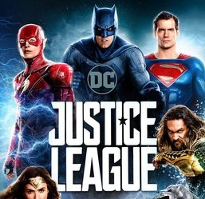

Back

Justice League
The Justice League is an all-star ensemble cast of established superhero characters from DC Comics' portfolio. Diegetically, these superheroes usually operate independently but occasionally assemble as a team to tackle especially formidable villains.
Superman
From his blue uniform to his flowing red cape to the "S" shield on his chest, Superman is one of the most immediately recognizable and beloved DC Super Heroes of all time. The Man of Steel is the ultimate symbol of truth, justice, and hope. He is the world's first Super Hero and a guiding light to all.
Batman
Batman was originally introduced as a ruthless vigilante who frequently killed or maimed criminals, but evolved into a character with a stringent moral code and strong sense of justice. Unlike most superheroes, Batman does not possess any superpowers, instead relying on his intellect, fighting skills, and wealth.
Aquaman
A half-Atlantean, half-human who is reluctant to be king of the undersea nation of Atlantis. He is a member of the Justice League. He possesses superhuman strength, durability, and has the ability to manipulate hydrokinesis, the tides, communicate with sea creatures and swim at supersonic speeds.
Flash
Nicknamed "the Scarlet Speedster", all incarnations of the Flash possess "superspeed", which includes the ability to run, move, and think extremely fast, use superhuman reflexes, and seemingly violate certain laws of physics.